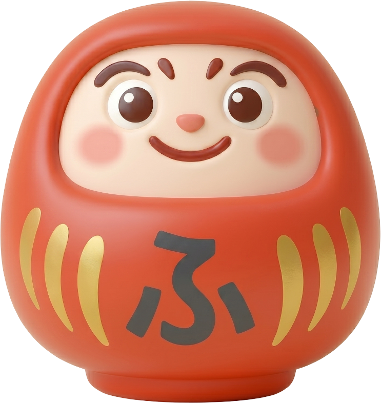

Mastery through Liquid Zen.
fudami was built on a simple premise: learning Japanese shouldn't feel like navigating a spreadsheet, nor should it be a superficial game. We combined the relentless efficiency of Anki's Spaced Repetition System with a modern, tactile interface designed to keep you focused and motivated.

Crafted by Arno
A solo developer passionate about language acquisition, cognitive science, and elegant user interfaces. Building tools that respect your time and attention.
code View on GitHubWhat we believe
psychology
Science-first
Every scheduling decision is backed by cognitive science research, not guesswork.
favorite
Respect your time
No dark patterns. No infinite scroll. Just clean, purposeful reviews that end when they should.
open_source
Open core
The core learning engine is open. You own your data. No vendor lock-in.